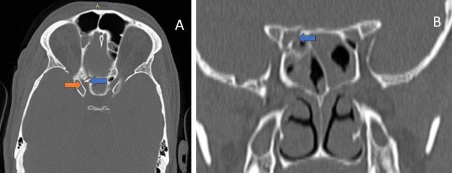
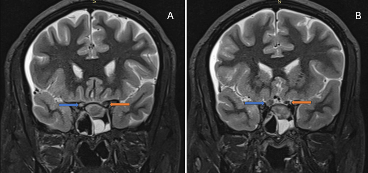
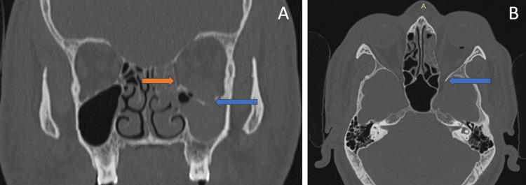
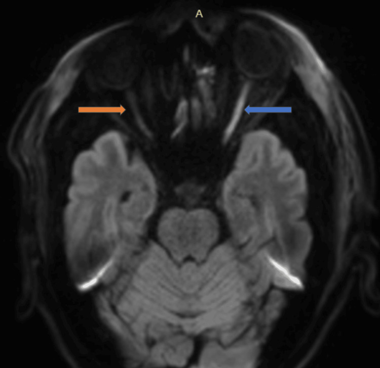
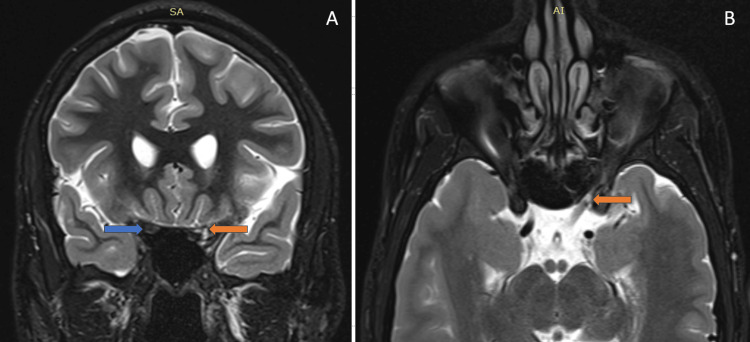

1501 — Chấn thương thị thần kinh: CT tìm gãy ống thị giác, MRI STIR/DWI tìm phù – đứt dây, khi nào giải ép / Traumatic optic neuropathy
Tags: pattern:gay-ong-thi-giac pattern:phu-day-thi pattern:han-che-khuech-tan pattern:dut-day-thi pattern:mat-thi-luc-sau-chan-thuong vung:than-kinh-thi vung:mat vung:hoc-mat vung:giao-thoa-thi anatomy:ong-thi-giac protocol:CT-hoc-mat protocol:MRI-hoc-mat protocol:OCT-RNFL protocol:thi-truong score:khong incidentaloma:khong
Mức chắc chắn (certainty): tổng hợp y văn (literature synthesis) — ghép loạt 5 ca nguyên văn có CT + MRI (Cureus 2024;16(12):e75546 — PMC11722660, CC BY 4.0), phân tích gộp 23 nghiên cứu / 1.851 bệnh nhân (Arch Acad Emerg Med 2025 — PMC11635542, CC BY-NC 4.0), tổng quan hệ thống điều trị (Eye (Lond) 2024 — PMC11306366, CC BY 4.0) và tổng quan hệ thống TON (J Ophthalmol 2021 — PMC7935564, CC BY 4.0). Nhóm không có bệnh nhân của mình; chỗ suy luận ghi [suy luận].
Ranh giới với bài đã có: 449 phủ vỡ nhãn cầu & dị vật nội nhãn; 420 phủ gãy sàn hốc mắt, kẹt cơ và hội chứng khoang (OCS); 1461 phủ áp-xe dưới màng xương hốc mắt; 1458 phủ bệnh thị do xạ. Bài này trả lời câu hỏi hẹp hơn nhưng hay bị bỏ sót: sau chấn thương đầu–mặt, thị lực giảm mà nhãn cầu còn nguyên — chụp gì, tìm dấu gì, và khi nào can thiệp.
Câu chốt — năm con số phải thuộc: (1) TON chiếm 0,7–2,5% chấn thương đầu–mắt (PMC7935564) và tới 8% ở chấn thương sọ não (TBI, PMC11306366). (2) Tổn thương nằm trong ống thị giác 71,4%, đỉnh hốc mắt 16,7%, cả hai 11,9% (n = 42, bài gốc) — nơi lòng ống chỉ ~4–5 mm. (3) Cải thiện thị lực gộp 50,6% (23 nghiên cứu, 1.851 bệnh nhân): corticoid 56,2%, corticoid + giải ép 42,9%, theo dõi đơn thuần 47,8%, I² 89,9% → không phương thức nào trội (PMC11635542). (4) Ba RCT (methylprednisolone, erythropoietin, levodopa–carbidopa) không chứng minh lợi ích; liều cao IVMP còn tăng tử vong trong TBI (PMC11306366). (5) Ca trực tiếp có mảnh xương 5 mm chèn dây thị: giải ép nội soi + corticoid → thị lực từ không nhận ánh sáng lên 6/60 (bài gốc).
1. Tổng quan bệnh học – cơ chế hình ảnh (TẠI SAO)
1.1 Giải phẫu: 50 mm, bốn đoạn, một "eo" không có dự trữ
- Dây thị dài 50 mm: đoạn trong nhãn cầu 1 mm, trong ổ mắt 24 mm, trong ống thị giác 9 mm, nội sọ 16 mm (bài gốc). Lòng ống thị giác chỉ ~4–5 mm cho dây thị ~3–4 mm + vỏ myelin + màng não → gần như không còn khoảng đệm.
- Điểm yếu cơ học: chỗ nối đoạn động (trong ổ mắt) với đoạn cố định (trong ống). Lực xoay–cắt (shear) dồn đúng vào đây, đồng thời mạch màng mềm (pial vessels) nuôi dây thị bị kéo giãn.
- Dây thị là chất trắng của hệ thần kinh trung ương (myelin do tế bào ít nhánh tạo), không tái sinh. Vỏ xương kín biến phù thành chèn ép, khác hẳn phù ở mô mềm tự do.
1.2 Hai cơ chế — và vì sao tiên lượng khác nhau
- Trực tiếp (direct TON): mảnh xương hoặc gãy ống thị giác đâm, chèn, rách dây thị. Tổn thương cấu trúc → ít hồi phục; nhưng nếu còn chèn ép cơ học thì giải ép mới có ý nghĩa (ca 1: mảnh 5 mm).
- Gián tiếp (indirect TON): lực truyền qua xương mặt–sọ → cắt sợi trục + tổn thương mạch pial → thiếu máu, không có mảnh xương. Đây là thể thường gặp nhất; CT có thể hoàn toàn bình thường.
- Vòng xoắn bệnh lý: chấn thương → phù sợi trục + chảy máu nhỏ → trong ống xương kín áp lực mô tăng → giảm tưới máu mao mạch → thiếu máu → phù thêm. Tế bào hạch võng mạc (retinal ganglion cells) chết thứ phát trong nhiều tuần (apoptosis) → lớp sợi thần kinh võng mạc (RNFL) mỏng dần dù thị lực đã ổn định.
- Vì vậy thời điểm quan trọng hơn "liều thuốc": dây thị thiếu máu không hồi phục sau 60–90 phút — cùng nguyên lý hội chứng khoang ở bài 420.
1.3 TẠI SAO CT thấy xương mà KHÔNG thấy dây thị
- Xương đặc ~1.000–2.000 HU, mô mềm hốc mắt ~30–40 HU, mỡ sau nhãn cầu −60 đến −100 HU: trên cửa sổ xương, dây thị biến mất trong mỡ. Câu hỏi của CT không phải "dây thị có phù không" mà là "có gãy ống thị giác, có mảnh xương chèn, có máu trong xoang bướm".
- Mảnh xương 1–2 mm nằm trong mặt phẳng lát cắt → hiệu ứng thể tích riêng phần (partial volume) vừa che mất mảnh thật, vừa tạo giả gãy. Bắt buộc lát ≤ 1 mm + dựng đa bình diện (MPR) trục/tránh/đứng dọc.
- CT là chuẩn để lập kế hoạch mổ (bài gốc): thấy gãy thành ống, mảnh xương di lệch bao nhiêu mm, và đường vào nội soi qua xoang bướm/sàng.
1.4 TẠI SAO MRI mới thấy dây thị — và giới hạn vật lý của nó
- Phù làm tăng nước tự do → T2/STIR tăng tín hiệu + phì đại dây thị. STIR (thời gian đảo TI ~150 ms ở 1,5 T) xóa mỡ sau nhãn cầu nên dây thị nổi rõ; T1 không xóa mỡ thì mỡ sáng át dây thị — đây là lý do mọi protocol chấn thương thị giác đều có STIR hoặc T2 fat-sat.
- Thiếu máu tế bào → nước chuyển nội bào → hạn chế khuếch tán: DWI sáng, ADC tối. Nhưng dây thị chỉ 3–4 mm, nằm sát xoang khí và xương → artifact nhạy cảm từ trường ở đỉnh hốc mắt. Chỉ đọc DWI khi khớp STIR và so bên đối diện.
- Đứt dây thị (avulsion): mất liên tục + tín hiệu dịch lấp chỗ đứt trong ống — dấu hiệu quyết định không mổ (ca 3).
1.5 Ngưỡng và hằng số phải nhớ
| Đại lượng | Giá trị | Nguồn |
|---|---|---|
| Tỉ lệ TON trong chấn thương đầu–mắt | 0,7–2,5%; tới 8% ở TBI | PMC7935564; PMC11306366 |
| Vị trí tổn thương (n = 42) | trong ống 71,4% > đỉnh hốc mắt 16,7% > cả hai 11,9% | bài gốc |
| Chiều dài dây thị / đoạn trong ống | 50 mm / 9 mm | bài gốc |
| Cải thiện thị lực gộp | 50,6% (1.851 ca) | PMC11635542 |
| Corticoid đơn thuần / theo dõi | 56,2% / 47,8% (I² 89,9%) | PMC11635542 |
| Cửa sổ giải ép | < 24–48 giờ, khi còn nhận ánh sáng | bài gốc |
| OCS — mở góc mắt ngoài | IOP > 40 mmHg, trong 2 giờ | bài 420 |
2. Mẫu hình + chẩn đoán phân biệt theo vị trí (gamut)
Mẫu hình: sau chấn thương đầu–mặt, giảm thị lực một bên (hoặc hai bên) + nhãn cầu còn nguyên + RAPD dương tính bên tổn thương → nghĩ TON. Hình ảnh phải trả lời ba câu:
- Có gãy ống thị giác / mảnh xương chèn không? (CT ≤ 1 mm)
- Dây thị phù, hạn chế khuếch tán hay đứt — ở đoạn nào? (MRI STIR/DWI)
- Có chèn ép ngoài dây thị không — máu tụ sau nhãn cầu/OCS, huyết khối xoang hang? (CT + MRI + lâm sàng)
2.1 Gamut theo vị trí giải phẫu
- Trong ống thị giác (intracanalicular) — ~71%: gãy ống ± mảnh xương (trực tiếp) · lực truyền không gãy xương (gián tiếp) · máu tụ trong ống.
- Đoạn trong ổ mắt (intraorbital): máu tụ sau nhãn cầu/OCS · mảnh xương sàn–thành trong chèn · dây thị căng khi lồi nhãn nặng.
- Đoạn nội sọ + giao thoa thị: hội chứng giao thoa chấn thương — bán manh hai thái dương (bitemporal hemianopia), thường kèm gãy sàn sọ trước, rò dịch não tủy.
- Xoang hang: TON + huyết khối xoang hang — giãn tĩnh mạch mắt trên, có thể liệt dây III/IV/V1/V2.
- Toàn dây thị: đứt/avulsion tại chỗ nối ống–nội sọ — không hồi phục, không mổ được.
2.2 Gamut "giả TON" — phải loại trước khi gọi TON
- Vỡ nhãn cầu (449): tiền phòng nông, giảm thị lực, không ấn nhãn cầu, không MRI khi nghi dị vật kim loại.
- OCS do máu sau nhãn cầu (420): lồi mắt căng, IOP > 40 mmHg → mở góc mắt ngoài trước, CT sau.
- Bệnh thị do thiếu máu không do viêm động mạch (NAION/AION): cùng "RAPD + giảm thị lực" nhưng không chấn thương, đĩa thị phù.
- Tổn thương võng mạc (commotio retinae), xuất huyết dịch kính, bong võng mạc — soi đáy mắt là chốt.
- Tổn thương vỏ não/thị giác: thị lực giảm nhưng RAPD âm tính, thị trường và chụp não bất thường.
3. Bảng so sánh phân biệt (ma trận đối chiếu)
| Thực thể (entity) | Hình ảnh điển hình | Chốt vào (rule-in) | Chốt loại (rule-out) | Gợi ý xác nhận |
|---|---|---|---|---|
| TON trực tiếp — gãy ống + mảnh xương | CT cửa sổ xương: gãy thành ống thị giác, mảnh xương di lệch vào lòng ống; MRI STIR tăng tín hiệu đoạn trong ống | Mảnh xương chèn dây thị trên MPR ≤ 1 mm + RAPD (+) + còn nhận ánh sáng | Không thấy mảnh xương trên MPR trục/tránh → chuyển nhóm gián tiếp | CT ≤ 1 mm + coronal; MRI STIR để xác nhận phù; hội chẩn mổ trong 24–48 giờ |
| TON gián tiếp — không gãy ống | CT: gãy sàn/thành trong ổ mắt nhưng ống thị giác nguyên; MRI STIR tăng tín hiệu, DWI hạn chế khuếch tán | Phù/hạn chế khuếch tán dọc dây thị mà không có chèn ép cơ học | Có mảnh xương chèn hoặc máu tụ chèn → xử lý theo nguyên nhân | MRI 1,5–3 T, lát < 3 mm, STIR + DWI + T1 fat-sat sau tiêm |
| Đứt dây thị (avulsion) | MRI STIR: mất liên tục dây thị + tín hiệu dịch lấp chỗ đứt tại chỗ nối ống–nội sọ | Gián đoạn thấy rõ + mất thị lực hoàn toàn ngay | Dây thị còn liên tục dù phù nặng → còn cửa sổ theo dõi | MRI trục + tránh; không mổ, tư vấn tiên lượng |
| Máu tụ sau nhãn cầu / OCS | CT: khối tăng đậm độ 50–90 HU sau nhãn cầu, lồi nhãn, dây thị bị đẩy/căng | Lồi mắt căng + IOP > 40 mmHg + RAPD (+) | Không lồi, IOP bình thường, không khối sau nhãn cầu | Canthotomy/cantholysis trong 2 giờ, không chờ CT |
| TON + huyết khối xoang hang | MRI STIR: xoang hang tăng tín hiệu một bên; T2: giãn tĩnh mạch mắt trên | Giãn TM mắt trên + tăng tín hiệu xoang hang cùng bên mất thị lực | Xoang hang đối xứng, TM mắt trên không giãn → không nghĩ huyết khối | MRI + MRV; kháng đông theo chỉ định huyết khối |
| Hội chứng giao thoa chấn thương | MRI STIR: tăng tín hiệu giao thoa, mảnh/gãy sàn sọ trước | Bán manh hai thái dương + tăng tín hiệu giao thoa | Thị trường một mắt hoặc không đối xứng → nghĩ dây thị, không phải giao thoa | Thị trường Humphrey 24-2; MRI trục/tránh giao thoa |
| NAION/AION (giả TON) | Đĩa thị phù, không gãy xương, không phù dây thị đoạn ống | Không chấn thương + đĩa phù + yếu tố mạch máu | Có chấn thương + phù dây thị trên STIR → TON | Soi đáy mắt, OCT RNFL, bối cảnh lâm sàng |
| Vỡ nhãn cầu | CT: mất thể tích nhãn cầu, bờ méo, tăng đậm độ dịch kính, khí/dị vật nội nhãn | Tiền phòng nông + giảm thị lực + chấn thương xuyên | Nhãn cầu tròn đều, tiền phòng bình thường → loại vỡ | Khám mắt trước, CT có cản quang; không MRI nếu nghi dị vật kim loại |
3.1 Dấu hiệu trên CT — đọc theo thứ tự
- Gãy ống thị giác: bắt đầu từ trần/thành trong ống (sát xoang bướm–sàng), đo độ di lệch mảnh xương theo mm; mảnh 5 mm trong ca 1 là ngưỡng chèn ép rõ.
- Gãy xương bướm, sàn sọ trước, xoang bướm có máu → dấu gián tiếp của lực tác động lên đỉnh hốc mắt.
- Dây thị "căng"/thẳng bất thường ở bệnh nhân lồi nhãn (dây bị kéo trên ổ mắt) — dấu hiệu cơ học, không phải phù.
- Máu tụ sau nhãn cầu (50–90 HU), khí nội nhãn, dị vật — các dấu hiệu đổi ngay kế hoạch xử trí.

Ca 1 — nam 32 tuổi, mất thị lực hoàn toàn mắt phải sau chấn thương đầu–mặt. Nguồn: Naik SN, Nayak DV — Cureus 2024;16(12):e75546, PMC11722660, Fig. 1, CC BY 4.0.3.2 Dấu hiệu trên MRI — STIR là chuỗi chủ lực
- STIR tránh: so hai dây thị cùng lát — bên tổn thương sáng hơn, dày hơn; mức độ sáng tương quan với phù, không tương quan tuyến tính với thị lực.
- DWI/ADC: hạn chế khuếch tán ở đoạn trong ổ mắt/trong ống gợi ý thiếu máu cấp; luôn đối chiếu ADC để loại T2 shine-through.
- Đứt dây thị: mất liên tục + dịch lấp — dấu hiệu tiên lượng tuyệt đối xấu, không mổ.
- Giao thoa: tăng tín hiệu phần bắt chéo → giải thích bán manh hai thái dương.
- Xoang hang: tăng tín hiệu STIR một bên + giãn tĩnh mạch mắt trên trên T2.

Ca 1 — cùng bệnh nhân với ảnh CT trên; tổn thương lan tới giao thoa. Nguồn: Naik SN, Nayak DV — Cureus 2024;16(12):e75546, PMC11722660, Fig. 2, CC BY 4.0.4. Protocol chụp + phân loại và quyết định
4.1 CT — chuỗi đầu tay, làm trước mọi thứ khác
- Chỉ định: mọi chấn thương đầu–mặt có giảm thị lực không giải thích được, RAPD (+), hoặc không đánh giá được thị lực (hôn mê, phù mi).
- Kỹ thuật: lát ≤ 1 mm, trục, dựng MPR tránh + đứng dọc dọc ống thị giác; cửa sổ xương và mô mềm; không cản quang cho mục tiêu xương, cản quang khi nghi máu tụ mạch/tổn thương mạch.
- Đo và ghi: vị trí gãy (thành nào), độ di lệch mm, có mảnh xương trong lòng ống, có máu xoang bướm, có tràn khí nội sọ.
- Trước CT: khám thị lực, RAPD, IOP, soi đáy mắt, vận nhãn — nếu IOP > 40 mmHg + lồi mắt căng thì canthotomy trước, không để máy CT làm trễ (bài 420).
4.2 MRI — khi CT không giải thích được, hoặc cần tiên lượng
- Chỉ định: CT âm tính mà vẫn giảm thị lực; CT có gãy ống nhưng cần xác định phù/đứt; nghi huyết khối xoang hang; hội chứng giao thoa.
- Kỹ thuật: 1,5–3 T, lát < 3 mm, gồm T1 trục + tránh không xóa mỡ, STIR trục + tránh, DWI trục (b = 1.000) + ADC, T1 xóa mỡ sau tiêm; phủ đỉnh hốc mắt đến xoang hang (bài gốc).
- Chống chỉ định: nghi vỡ nhãn cầu hoặc dị vật kim loại nội nhãn/hốc mắt → CT trước, MRI sau khi loại trừ (bài 449).
- Theo dõi chức năng: OCT RNFL (mỏng dần sau nhiều tuần), thị trường (giao thoa), VEP khi cần khách quan hóa.
4.3 Phân loại — không có RADS cho TON, dùng 3 trục
| Trục | Lựa chọn | Ý nghĩa điều trị |
|---|---|---|
| Cơ chế | Trực tiếp (mảnh xương, gãy ống) / gián tiếp (lực truyền) | Trực tiếp có thể giải ép; gián tiếp không có gì để giải ép |
| Vị trí | Trong ống / trong ổ mắt / nội sọ / giao thoa / toàn dây | Quyết định đường mổ và tiên lượng |
| Cấu trúc | Còn liên tục (phù) / đứt (avulsion) / chèn ép ngoài dây | Đứt = không mổ; chèn ép = mổ sớm |
4.4 Đường đi quyết định
flowchart TD
A[Chấn thương đầu mặt + giảm thị lực] --> B{Nhãn cầu vỡ hoặc IOP trên 40 mmHg?}
B -->|Có| C[Mở góc mắt ngoài trong 2 giờ + xử lý nhãn cầu]
B -->|Không| D[CT hốc mắt lát 1 mm + MPR trục tránh]
D --> E{Gãy ống thị giác hoặc mảnh xương chèn?}
E -->|Có, còn nhận ánh sáng| F[Giải ép nội soi trong 24 đến 48 giờ]
E -->|Không| G[MRI STIR + DWI + T1 xóa mỡ sau tiêm]
G --> H{Đứt dây thị?}
H -->|Có| I[Không mổ, tư vấn tiên lượng xấu]
H -->|Không| J[Theo dõi, phục hồi chức năng, OCT RNFL và thị trường]
F --> J
- Giải ép (optic canal decompression): chỉ đặt ra khi có chèn ép cơ học rõ + còn nhận ánh sáng; cửa sổ tốt nhất < 24–48 giờ (bài gốc). Bằng chứng không chứng minh lợi ích thống kê của giải ép nói chung (PMC11306366) → quyết định cá thể hóa, không "mổ vì có gãy ống".
- Corticoid: trong loạt ca, methylprednisolone 1 g/ngày chia 4 lần × 5 ngày, sau đó prednisolone uống 1 mg/kg/ngày × 3 ngày, giảm liều trong 9 ngày (bài gốc) — nhưng bằng chứng hiện tại không ủng hộ thường quy, và liều cao ở TBI tăng tử vong (PMC11306366; PMC11635542 không cho thấy trội hơn theo dõi). Không dùng corticoid liều cao như "phác đồ mặc định".
- Huyết khối xoang hang: LMWH 100 IU/kg dưới da × 2 lần/ngày + kháng sinh khi nghi nhiễm + corticoid (bài gốc); theo dõi MRV và thị lực.
- Đứt dây thị/giao thoa nặng: không mổ, tư vấn tiên lượng, phục hồi chức năng và hỗ trợ tâm lý.
5. Biến thể bình thường và cạm bẫy
- Vách xương mỏng 1–2 mm giữa ống thị giác và xoang bướm/sàng: trên lát dày dễ tạo giả gãy; luôn xem MPR tránh và so bên đối diện.
- Dây thị bình thường hơi cong và có thể hơi sáng ở đoạn trong ống do mỡ thưa; chỉ gọi bệnh khi bất đối xứng rõ + phì đại.
- RAPD âm tính không loại trừ TON hai bên; thuốc co đồng tử (opioid, pilocarpine) làm RAPD khó đọc — ghi rõ trong phiếu.
- Thỏa mãn tìm kiếm (satisfaction of search): thấy gãy sàn/thành trong ổ mắt rồi dừng, bỏ qua ống thị giác — đúng ca 2 (Hình 4A có gãy sàn + thành trong, Hình 4B không gãy ống).
- Artifact DWI ở đỉnh hốc mắt (gần xoang khí/xương) → không chẩn đoán trên một chuỗi; cần ADC + STIR.
- CT/MRI có thể bình thường trong TON gián tiếp — TON là chẩn đoán lâm sàng, hình ảnh để tìm cơ chế và tiên lượng.
- Đừng nhầm phù dây thị với u/thâm nhiễm: TON theo trục dây thị, không có khối, có bối cảnh chấn thương; u/thâm nhiễm thường lan ra ngoài vỏ, ngấm thuốc dạng khối.
- Ảnh sau mổ: thay đổi tín hiệu có thể tồn tại nhiều tuần — so với ảnh nền nếu có, đừng gọi "tiến triển".
6. Tự lượng giá — Blind Quiz
Ca 1 — Nam 32 tuổi, mất thị lực hoàn toàn mắt phải ngay sau chấn thương đầu–mặt; RAPD (+) phải, IOP 18 mmHg.
- Gợi ý: nhãn cầu còn nguyên, không lồi căng.
- Câu hỏi: Dấu hiệu chính trên CT? Đây là TON trực tiếp hay gián tiếp? Có chỉ định mổ không, vì sao?
Bấm để hiện đáp án (findings + chẩn đoán)
- Dấu hiệu: gãy thành trong ống thị giác phải, mảnh xương 5 mm chèn vào dây thị (mũi tên xanh); tránh (B) thấy gãy trần/thành trong ống.
- Chẩn đoán: TON trực tiếp do mảnh xương chèn — có nguyên nhân cơ học nên giải ép nội soi có ý nghĩa, kèm corticoid; thị lực cải thiện lên 6/60 sau mổ.
- Vì sao mổ: còn chèn ép cơ học trên ảnh + không có đứt dây; cửa sổ 24–48 giờ.
- Đối chiếu MRI cùng bệnh nhân:
- STIR: tăng tín hiệu + phì đại đoạn trong ống và đoạn nội sọ dây thị phải, lan tới giao thoa.
- Nguồn: Naik SN, Nayak DV — Cureus 2024;16(12):e75546, PMC11722660, Fig. 1–2, CC BY 4.0.
Ca 2 — Nam 55 tuổi, mất thị lực mắt trái sau chấn thương mặt; RAPD (+) trái; CT có gãy sàn và thành trong ổ mắt.

- Gợi ý: không có mảnh xương trong ống thị giác.
- Câu hỏi: Vì sao vẫn gọi là TON? Chuỗi nào xác nhận tổn thương dây thị? Điều trị nào có bằng chứng?
Bấm để hiện đáp án (findings + chẩn đoán)
- Dấu hiệu: gãy sàn (mũi tên xanh) và thành trong (mũi tên cam) ổ mắt trái; ống thị giác trái không gãy (B).
- Chẩn đoán: TON gián tiếp — lực truyền, không chèn ép cơ học; MRI cho thấy hạn chế khuếch tán đoạn trong ổ mắt dây thị trái.
- Điều trị: corticoid liều cao trong loạt ca; bằng chứng gộp không cho thấy trội hơn theo dõi (47,8%), và 3 RCT âm tính → không mặc định truyền liều cao.
- Đối chiếu DWI:

- Nguồn: Naik SN, Nayak DV — Cureus 2024;16(12):e75546, PMC11722660, Fig. 3–4, CC BY 4.0.
Ca 3 — Nam 18 tuổi, mất thị lực hoàn toàn mắt trái ngay sau chấn thương; không cải thiện dù điều trị.

- Gợi ý: hình dạng dây thị hai bên khác nhau rõ.
- Câu hỏi: Dấu hiệu chốt? Vì sao không mổ? Tiên lượng?
Bấm để hiện đáp án (findings + chẩn đoán)
- Dấu hiệu: mất liên tục dây thị trái tại chỗ nối đoạn trong ống–nội sọ, ổ tín hiệu dịch lấp chỗ đứt (mũi tên cam); bên phải liên tục (mũi tên xanh).
- Chẩn đoán: đứt/avulsion dây thị — tổn thương cấu trúc không hồi phục; không mổ vì không có gì để nối/giải ép, thị lực không cải thiện sau theo dõi.
- Bài học: hình ảnh quyết định từ chối mổ, tránh can thiệp vô ích; tư vấn tiên lượng sớm.
- Nguồn: Naik SN, Nayak DV — Cureus 2024;16(12):e75546, PMC11722660, Fig. 5, CC BY 4.0.
Bài liên quan chéo
- 449 – Chấn thương mắt & dị vật nội nhãn — vỡ nhãn cầu, chống chỉ định MRI/ấn nhãn cầu
- 420 – Vỡ sàn hốc mắt, kẹt cơ và hội chứng khoang — IOP > 40 mmHg, canthotomy trong 2 giờ
- 1461 – Áp-xe dưới màng xương hốc mắt ở trẻ — chèn ép thị thần kinh không do chấn thương
- 1458 – Bệnh thần kinh thị do xạ — phù/ngấm thuốc dây thị không do chấn thương
- 410 – Giải phẫu học mắt cắt lớp — mốc giải phẫu ống thị giác, đỉnh hốc mắt
Không dùng để chẩn đoán độc lập khi chưa có người hướng dẫn.